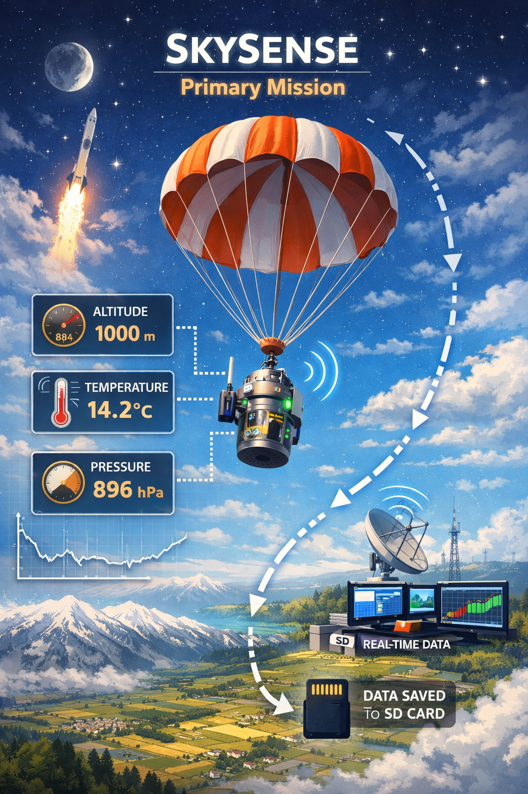
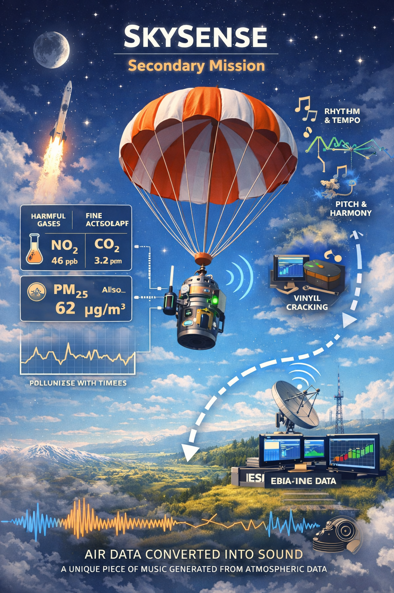

The primary mission of SkySense is to collect and transmit atmospheric data
during the descent of the CanSat after launch.
Using onboard sensors, the satellite will measure altitude, temperature and atmospheric
pressure throughout the flight. These measurements will allow us to analyze how atmospheric
conditions change with altitude during the descent phase.
All collected data will be transmitted to the ground station in real time through a LoRa communication module
and, at the same time, the data will also be stored locally on an SD card to ensure that
no information is lost in case of transmission issues.
This mission represents the scientific foundation of the SkySense project and ensures
reliable atmospheric measurements throughout the entire flight.
The secondary mission of SkySense focuses on monitoring air quality and transforming environmental
data into sound.
The CanSat will be equipped with sensors capable of detecting harmful gases and fine particulate matter,
which are among the main causes of air pollution. This topic is particularly relevant in regions such as the
Po Valley, where air quality is often a critical environmental issue.
In addition to measuring pollutants, SkySense will also collect other parameters such as altitude,
speed and acceleration. Once transmitted to the ground station, these data will be converted into musical elements.
Each environmental parameter will influence different aspects of the generated music:
🚀 altitude and pressure will influence pitch and harmonic variation
🚀 speed and acceleration will influence rhythm and tempo
🚀 air quality will generate a vinyl-like crackling effect, increasing in intensity as pollution levels rise.
The resulting sound will then be refined using an AI-based music model, creating a unique piece of music
generated directly from atmospheric data.
Beyond its artistic value, this system could have practical applications by providing a sensory representation
of air quality, potentially helping visually impaired people or anyone who wants immediate feedback about the air
they are breathing.

